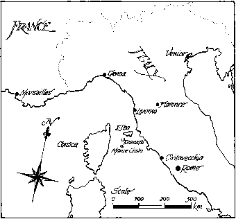

Dantes stood up and looked in front of the boat. A hundred metres away, he saw the black and frightening shape of the rock where the Chateau d'If stands. The prison was about 300 years old. 'People tell many strange stories about this place, 'Dantes thought. 'Prisoners go there and never return. Is this the end of all hope?'
Edmond Dantes is a successful young seaman. He has a loving
father and a beautiful lover, Mercedes, who is going to marry him. Soon he is going to be the
captain of his own ship. What can go wrong in his life?
Edmond has enemies who hate his success. They tell the government that he is helping Napoleon.
Napoleon wants to return to France as its ruler. On the day of Edmond's wedding to Mercedes, he is
taken to the prison at the Chateau d'If and thrown into a dark, frightening underground room. Is
this the end of his life as a free man?
Another prisoner, Faria, tells Edmond about some treasure on the island of Monte Cristo. The two
men try to escape from the prison, but Faria dies from a serious illness. Will Edmond escape? Will
he reach the island of Monte Cristo and find the treasure? And will he ever return to his father
and Mercedes in the city of Marseilles?
This exciting adventure story takes place in France in the 1800s. Some of the people and places in
it are real.
When the writer Alexandre Dumas was born in 1802, Napoleon became ruler of France. For many years
he fought wars across Europe, and France became a very strong country. But in 1814, Napoleon's
enemies sent him away from France to the island of Elba. These enemies — Prussia, Russia, Britain,
Austria, Sweden and other countries — brought the Bourbon
kings back to rule France. Many French people did not like these new rulers, and Napoleon knew
this. In 1815, the year when The Count of Monte Cristo begins, he returned to his home country.
Napoleon escaped from Elba and sailed to Cannes, in the south of France. His friends joined him
there and he went to Paris. The king, Louis XVIII, left the country. Napoleon reached Paris on 20th
March and became the ruler of France for one hundred days. Then he lost a great fight at Waterloo
and he was sent to the island of St Helena. He died there in 1821.
We read about another real person in this book - Cesare Borgia. The Borgia family played an
important part in Italian history. Cesare Borgia was born in 1475. His father, Roderigo Borgia,
became Pope* Alexander VI in 1492. Cesare was a politician and a soldier. He fought for, and won,
many Italian cities, but he was a hard and unkind ruler. After his father died, Cesare went to
prison. Later, he escaped to Spain and fought for the King of Navarre.
The prison of the Chateau d'If stands at the entrance to the old French port of Marseilles. As
Edmond Dantes says, in the past this was a prison for 'important people, enemies of the king'.
Today it holds no prisoners, but visitors can go there. Many of these visitors have read The Count
of Monte Cristo.
The writer of this book was one of two famous French writers called Alexandre Dumas. They were
father and son. Dumas p re (father) wrote The Count of Monte Cristo and many other stories. He is
still the most widely read of all French writers.
He was born in 1802. His father was a soldier with Napoleon, but died in 1806 and left very little
money for his family. Alexandre went to school for a short time, but at the age of sixteen he
started work. He read a lot of books and liked the
plays of William Shakespeare and the stories of Sir Walter Scott. Dumas also started to write for
magazines and the theatre.
Dumas enjoyed travel and adventure. He joined Garibaldi in Sicily in 1860. He was part of
Garibaldi's fight to make Italy into 'one great country'. This is the same 'great country' that
Faria dreams of in The Count of Monte Cristo.
Dumas wrote this book in 1844. He got the idea from a true story about a French shoemaker who was
going to marry a rich woman. His enemies lied about him and he went to prison. There, a man told
him about some treasure hidden in Italy. When the shoemaker left prison, he found the treasure. He
became a rich man.
In 1844 Dumas wrote another famous story, The Th Musketeers, about France in the 1600s. His
stories were very popular because they were full of brave men, beautiful women, dangerous
adventures and excitement. Dumas wrote more than 1,200 books before he died in France in 1870. He
turned his writing into a business. Young people helped him with his books
and at the same time learned to write well.
Dumas was very successful in France and other countries.
Many of his books were read in English. He made a lot of money
- but he spent most of it on the Chateau de Monte Cristo (his
house in the country), women and unsuccessful business plans.
It is two hundred years since Dumas wrote The Count of Monte Cristo,
but the book is still very popular. Readers love the story of
the honest and kind young man who is sent to prison. Edmond Dantes' life is destroyed by his
enemies, but in Dumas' book good is stronger than bad. We know that Dantes will find a way to
escape from the Chateau d'If and his enemies. One day he will be a successful man again.
The Count of Monte Cristo was first filmed in 1908. The pictures in this book are taken from a film
for television. Richard Chamberlain played Edmond Dantes and Kate Nelligan was Mercedes.

On 24th February 1815 the ship Pharaoh came in to Marseilles. A
man on the shore jumped into a boat and went out to the ship.
A young man, about twenty years old, looked over the side of the ship. He seemed to be the captain.
He was the type of man who meets danger without fear.
'Oh! Is it you, Dantes?' cried the man in the boat. 'What has happened?'
'A very sad thing, Mr Morrel,' replied the young man. 'When our ship was near Civitavecchia, we
lost our brave Captain Leclerc.'
He turned to his men and gave a quick order. Then he turned again to Morrel. The Pharaoh was
Morrel's ship, and Edmond Dantes was First Officer.
'We will all die one day, Edmond,' said Morrel. 'The
goods—?'
'They are safe, Mr Morrel. Now, come on board. Here is Danglars. He does all the buying and
selling. I must look after my ship.'
Morrel climbed quickly onto the ship and met Danglars.
Danglars was about twenty-five years old. Nobody on the Pharaoh
liked him.
'Well, Mr Morrel,' said Danglars. 'You heard about the sad death of Captain Leclerc?'
'Yes. He was a brave and good man.'
'And a good seaman. He was old and wise, a good ship's captain for Morrel and Son,' replied
Danglars.
'A young man can be a good captain, too,' Morrel said. 'Look at our friend Edmond. He works well.'
'Yes,' said Danglars. He looked at Dantes. He did not like him.
'Yes, he is young and he is very sure of himself. When the captain
died, we had to take orders from him. And as a result, we lost a day and a half at the island of
Elba. We needed to come straight to Marseilles.'
'He has to take the captain's place,' said Morrel . 'He is the Firs Officer. But it was wrong to
stop at Elba. Was the ship unsafe ? Did you need to work on it?'
'There was nothing wrong with the ship. We stopped at Elba and went on shore. It was a holiday, not
work!'
'Dantes,' the shipowner called. 'Come here, please.'
'In a minute, Mr Morrel,' answered Dantes. He gave an order to his men. When the ship was safely
tied up, Dantes came towards Morrel. 'The ship is now ready,' he said. 'Can I help you, sir?'
Danglars took a few steps back. 'Why did you stop at th island of Elba?' asked Morrel.
'I don't know, Mr Morrel. It was Captain Leclerc's last order.
He gave me a letter for Marshal Bertrand.'
Morrel took Dantes' arm and pulled him close. 'And how is Napoleon?' he said quietly.
'He seemed very well.'
'You spoke to him?'
'No, he spoke to me,' said Dantes. 'He asked: "When did you leave Marseilles? What goods are on
board?" He was very interested. Perhaps he wanted to buy the ship. "I am only the First Officer," I
said. "The ship belongs to Morrel and Son. "Ah!" he said, "I know them. The Morrels have owned
ships for many years. But there was a Morrel who was a soldier. He fought with me at Valence."'
'True!' cried Morrel, happily. 'That was Policar Morrel, my uncle. He was a great soldier, a
captain. Dantes, my uncle will be very happy about Napoleon. It will bring fire into the
old soldier's eyes. You were right to stop at Elba, Dantes. But don't tell people about the
letter for Marshal Bertrand, and about Napoleon. You will get into trouble.'
'Why?' asked Dantes. 'I don't know what was in the letter. Napoleon only asked me simple questions.
Anyone can answer questions like those.'
'My dear Dantes,' said the owner, 'are you now free?'
'Yes, Mr Morrel,' Dantes replied.
'Can you come and have dinner with me?'
'Thank you, Mr Morrel. But I must visit my father first.'
'Visit your father, and then come to my house.'
'Thank you again, Mr Morrel. But there is another person that I must see.'
'True, Dantes. I forgot. Of course - the beautiful Mercedes.
She came to see me three times. She wanted news about
the Pharaoh.'
'She has promised to marry me,' the young seaman said.
'My dear Edmond,' said the owner, 'that is very good news.
Now hurry away to see your father.'
'Thank you, Mr Morrel. I have a question. Can I leave the
ship for fourteen days?'
'To get married?' Morrel asked.
'Yes, first. And then I want to go to Paris.'
'Yes, of course, Dantes. But come back again in one month.
The Pharaoh can't sail without her captain.'
'Without her captain!' cried Dantes. His eyes were bright and he was very happy. 'Are you really
going to make me captain of the Pharaoh? Oh, Mr Morrel! I thank you for my father and for
Mercedes.'
'Good, Edmond. Go to your father, go and see Mercedes, and
then come to see me.'
'Shall I take you to the shore with me?' Dantes asked.
'No, thank you. I'll stay and do some work with Danglars Were you pleased with him on this journey ?'
'Do you mean, "Is Danglars a good friend?" No, we aren't friends. We disagreed one day near the
island of Monte Cristo, and he doesn't like me. But he works well. I can say nothing against him.'
The shipowner watched Dantes until he reached the shore. Danglars stood on the ship behind Morrel.
He also watched the young man as he went away. But he did not look kindly at Dantes.